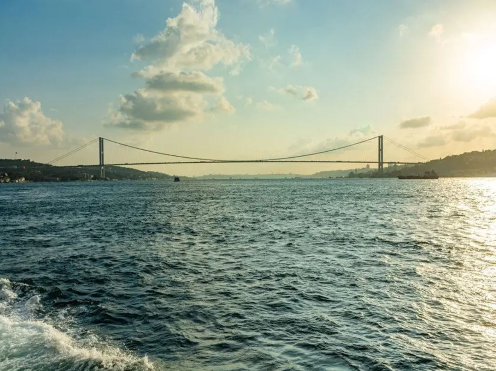

İstanbul Boğazı
İstanbul Boğazı Hakkında
İstanbul Boğazı Hakkında
İstanbul Boğazı ya da tarihî ismiyle Bosporus (Yunanca: Βόσπορος, romanize: Bosporos (Öküz Geçidi)), Asya ile Avrupa kıtalarını birbirinden ayıran ve Marmara Denizi ile Karadeniz'i birbirine bağlayan bir boğaz ve uluslararası su yoludur.[1] Boğaz, genel olarak kuzeydoğu-güneybatı doğrultusunda uzanır ve İstanbul şehrini Avrupa Yakası ve Anadolu (Asya) Yakası olarak ikiye böler. Boğazın her iki yakasına yayılan yerleşim bölgesine Boğaziçi adı verilir.
1923'te Lozan Antlaşması ile birlikte imzalanan Boğazlar Sözleşmesi ile uluslararası su yolu niteliği kazanan ve 1936 yılında imzalanan Montrö Boğazlar Sözleşmesi ile tamamen Türkiye Cumhuriyeti'nin denetimine giren İstanbul Boğazı, Marmara Denizi ve Çanakkale Boğazı ile birlikte Türk Boğazları olarak adlandırılır ve Avrupa ile Asya kıtalarını birbirinden ayıran doğal sınırlardan biri olarak kabul edilir.[3] 1 Mayıs 1982 tarihinde yürürlüğe giren İstanbul Liman Tüzüğü uyarınca, İstanbul Boğazı'nın kuzey sınırı Anadolu Feneri'ni Rumeli Feneri'ne birleştiren hat; güney sınırı ise İnciburnu Feneri'ni Ahırkapı Feneri'ne birleştiren hat olarak belirlenmiştir.
Boğazın kıyıları tarih boyunca değişik uygarlıklara yurt olmuş, MÖ 685 yılında Megara'dan gelen Yunanların günümüzde tarihî yarımada olarak adlandırılan bölgede bir şehir devleti kurmasıyla gelişerek büyümüştür.[5] Roma İmparatorluğu'na, Doğu Roma (Bizans) İmparatorluğu'na, Latin İmparatorluğu'na ve Osmanlı İmparatorluğu'na başkentlik yapan ve günümüzde Türkiye'nin en büyük kenti olan İstanbul'un simgelerinden biridir ve gerek kentin, gerekse ülkenin yurt dışı tanıtımlarında baş ögelerden biri olarak kullanılmaktadır.
Uluslararası deniz taşımacılığının yapılabildiği en dar geçit olma özelliğini taşıyan İstanbul Boğazı üzerinde 15 Temmuz Şehitler, Fatih Sultan Mehmet ve Yavuz Sultan Selim asma köprüleri bulunur.[6] Bu köprüler İstanbul'un iki yakasını birbirine bağladığı gibi, Avrupa kıtası ile Asya kıtası arasında da birer geçiş noktası yaratır. İstanbul'da toplu taşımanın kilit noktalarından biri olan Boğaz'da kıtalararası ulaşım, deniz otobüsleri, yük, araç ve yolcu taşıyan feribotlar, şehir hatları vapurları ve yolcu motorlarıyla da desteklenmektedir.[6] Deniz altı raylı sistem tüp geçidi olan Marmaray Tüneli ile iki kıta arasında kesintisiz bir demiryolu hattı oluşmuş olup bu demiryolu tüp geçidi ile Londra'dan Pekin'e demir yolunu kullanarak gitmek mümkün olacaktır.
İstanbul Boğazı, Karadeniz'e kıyısı bulunan Bulgaristan, Gürcistan, Romanya ve Ukrayna için Akdeniz'e ulaşmanın tek yoludur.[6] Çanakkale Boğazı ve Marmara Denizi ile birlikte İstanbul Boğazı'nın egemenlik hakları, 20 Temmuz 1936'da imzalanan Montrö Boğazlar Sözleşmesi ile belirli kurallar ışığında Türkiye'ye verilmiştir.